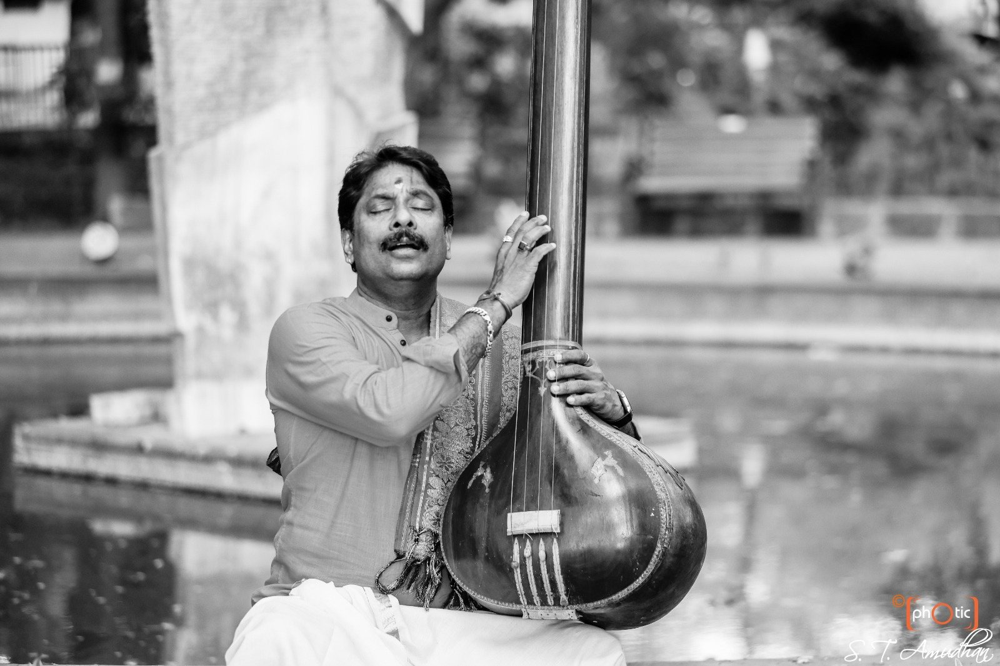

Bring the music closer
A voice for the whole performance.
For concerts, dance productions and musical collaborations, share the idea and begin a conversation.
Enquire to book
Listen & watch
Concerts, dance and musical collaborations, gathered in one listening room.
Watch and listen
Move between Carnatic vocal, dance repertoire, fusion collaborations and conversations, or browse the complete collection.
Bring the music closer
For concerts, dance productions and musical collaborations, share the idea and begin a conversation.
Enquire to book